Whilst I have been a web developer for many years, for the last six years I have worked mainly for Metro Imaging building and maintaining their four Wordpress websites, as well as creating and managing their Google and Meta PPC campaigns. During the same period, as a freelance web developer, I have been priviledged to have created websites and html5 Ad campaigns for companies such as Netflix, Lego, Disney, Lionsgate and Amazon Prime Video.
I produced a simple one page website for Lego to host a map and instructions for a Holiday treasure trail activity. I hosted this on Cloudflare for webpage security and efficiency.
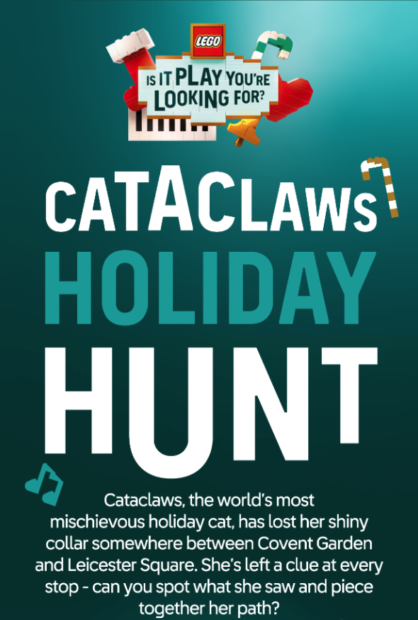
As part of a publicity campaign for Netflix Black Mirror's season 7 launch, I created the complete Twebsite for the ficitional company TCKR Systems. Important parts of the brief were that it could handle 100K visitors in a day, and not be hacked. I handled this by hosting the website on a high powered AWS server, along with a Cloudflare professional account to block access to vulnerable url's, and to hide the origin server.
Because the website was advertised on billboards at Picadilly Circus,this was perhaps the biggest, and certainly my most stressful project to date.
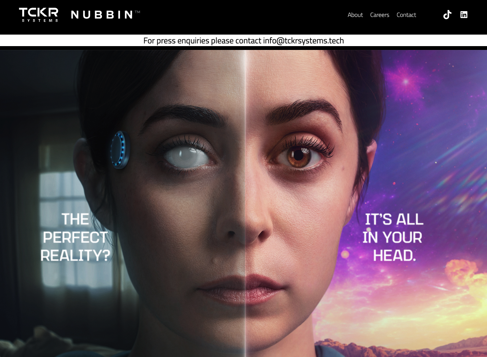
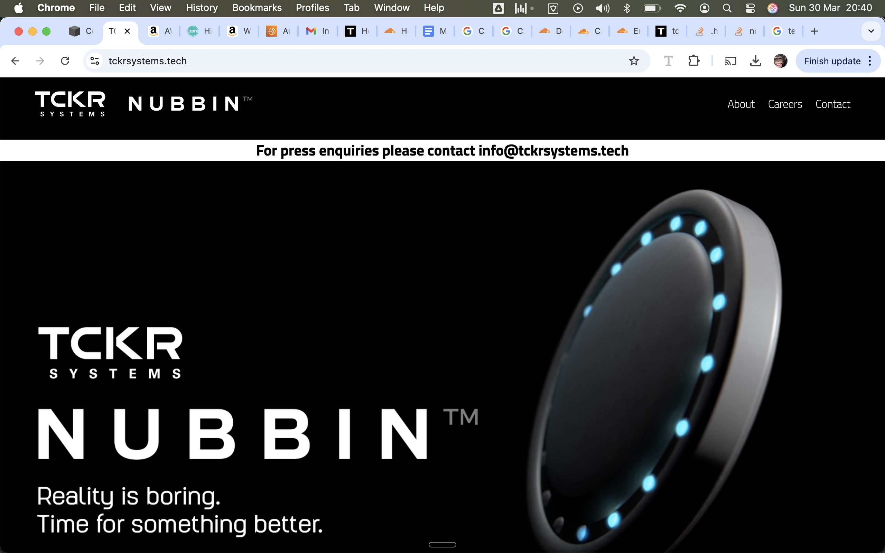
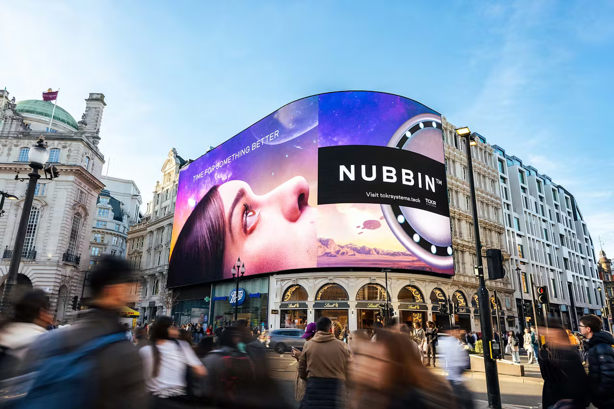
For one year I produced HTML5 Adverts for Amazon's German Champions League coverage. These were simple hand coded html5 responsive ads, with a left, right and top section.
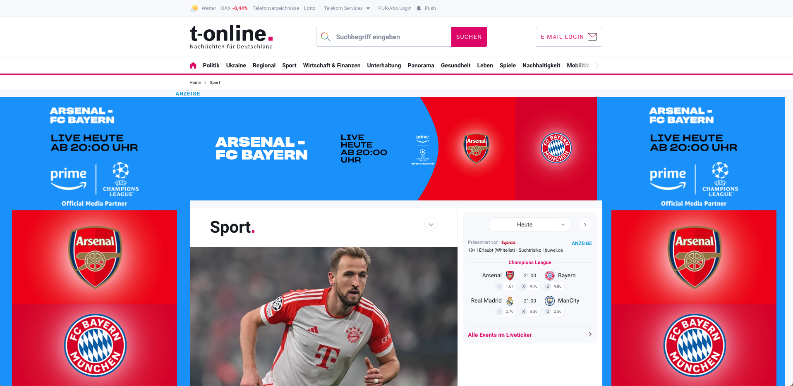
I created sets of animated html5 adverts for the home release of Disney Marvels Thor Love and Thunder in various sizes and for various countries. These adverts were largely created in Google Web Designer and served from Amazons Sizmek Studio. As you can see from the feedback for the overall campaign, the client was happy.
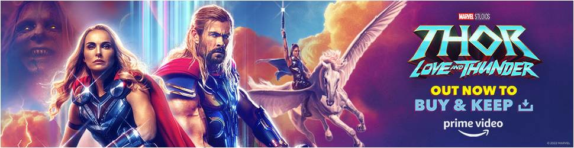
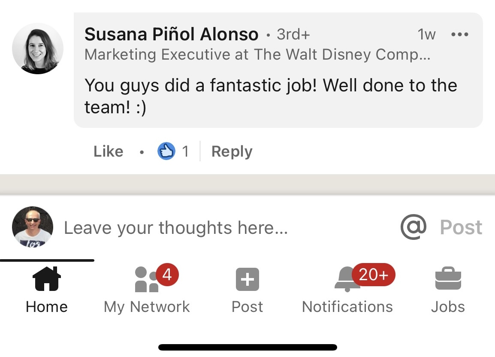
I produced Animated HTML5 banner adverts in a variety of sizes, from mobile app to 'fireplace' adverts, for around 20 - 30 film and television productions.
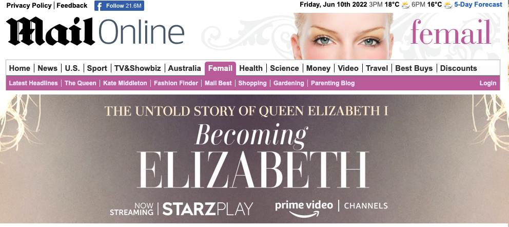
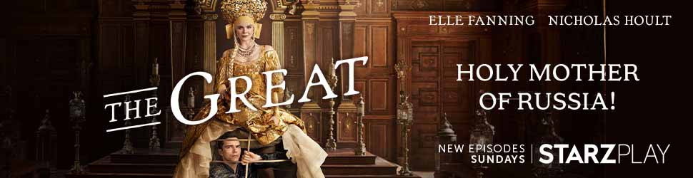
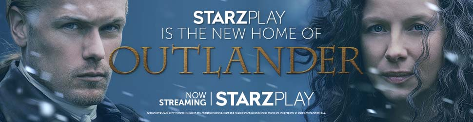
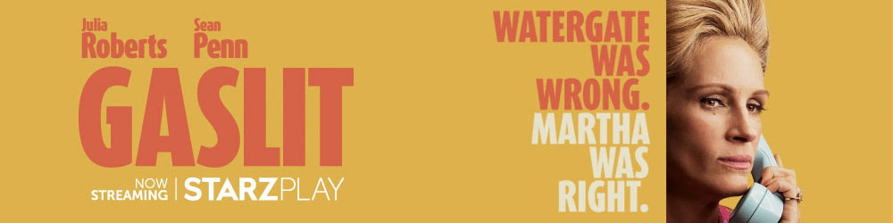
Produced animated HTML5 adverts, using supplied graphics, for the home video release of Disney Marvels Venom & Carnage.
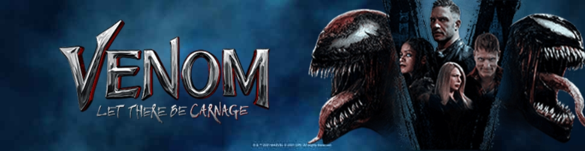
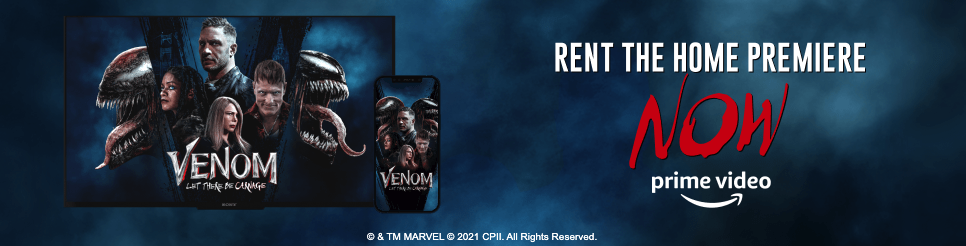
I manage and maintain the Magento 2 website for local business Hatfields of Colchester.
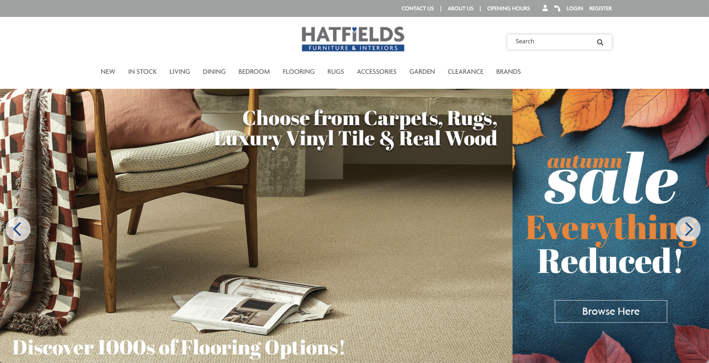
This encompasses producing the Metro Imaging website and also updating and maintaining a bespoke ecommerce system. The bespoke ecommerce system runs on a separate server for hacking prevention and is displayed to the public using proxy path reverse on a different Apache server.
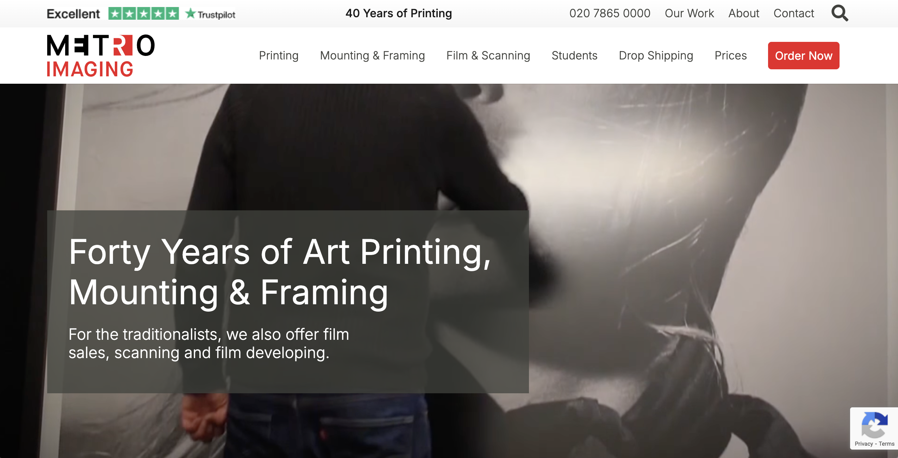
Originally just a desktop website, I updated the site to a more mobile friendly version. I also created a bespoke client area, that has data pushed to it hourly from Google Appscript.
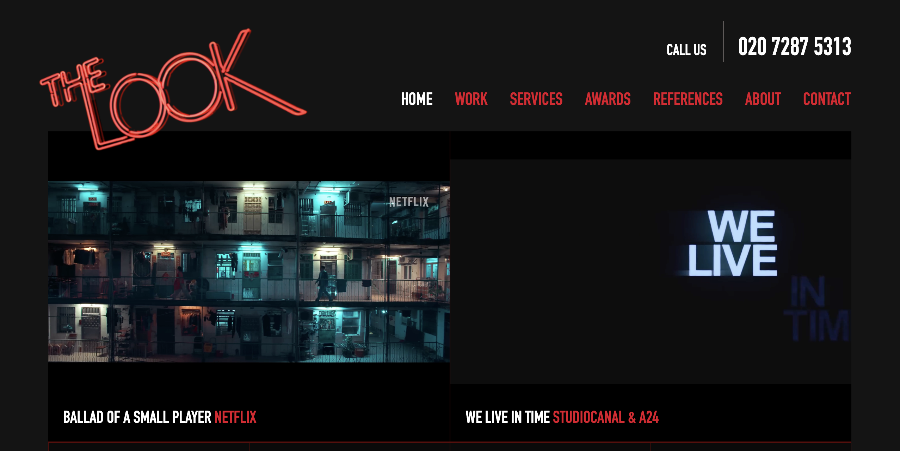
Following a security breach, I took over the management and hosting responsibilities around 2017.
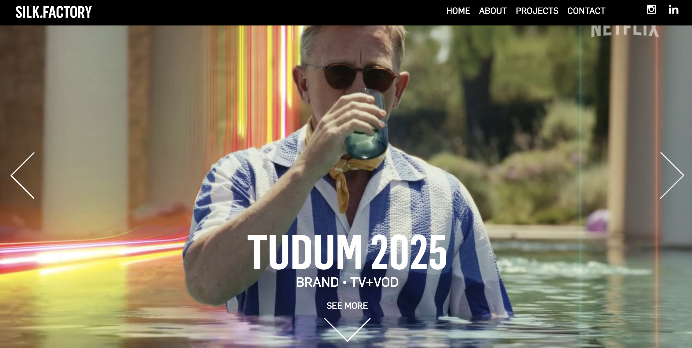
I created this website for local business Bethell and Clark, and have built and maintained their websites for many years.
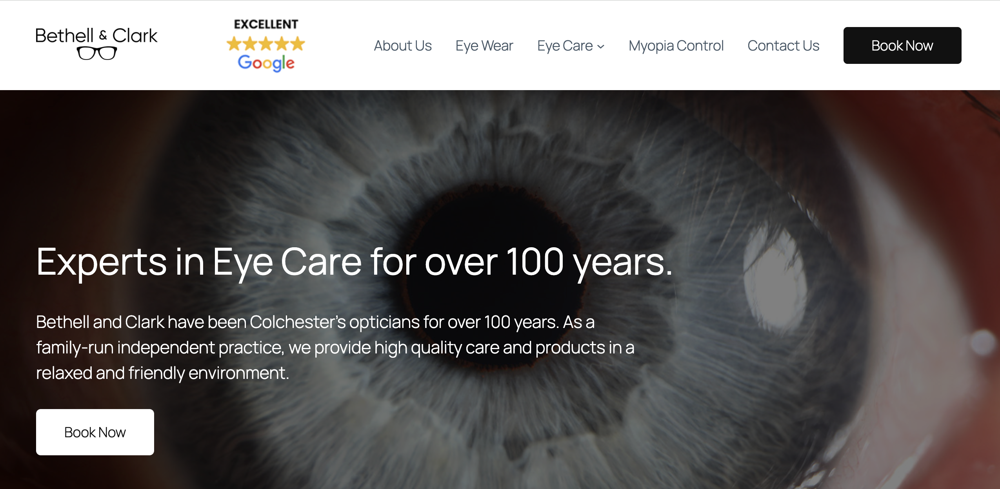